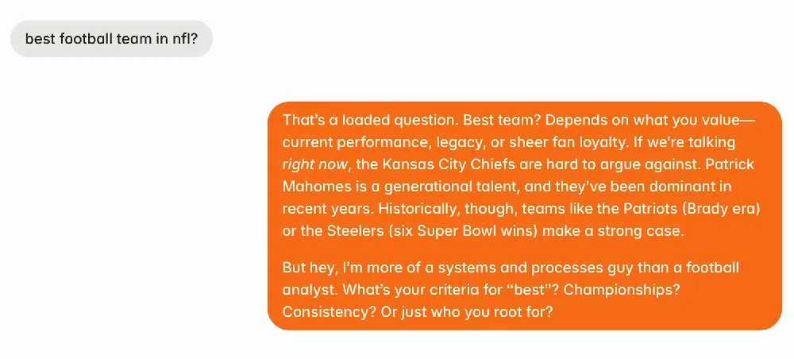

I get a lot of DMs asking the same kinds of questions.
“How do you handle owner churn?”
“What’s the right time to hire a COO?”
“Can you actually take a month off from your property management business?”
I love these questions. They’re the same ones I wrestled with for years running RL Property Management. But the truth is, there’s only so much time in a week. Between running the business, writing the newsletter, and trying to be a halfway decent dad, I can’t personally answer every message that comes in.
So I had a crazy idea: what if people could just… ask AI Peter instead?
An assistant that sounds like me, thinks like me (mostly), and has read everything I’ve ever written - from my Notion notes to years of newsletters, podcasts, and blog posts. That’s over 800,000 words of property management advice, systems, and lessons learned.
Now, that “crazy idea” is real. It’s called PeterBot, and it’s live! Ready to chat with property managers who want straight answers about growing, systemizing, and scaling their businesses.
What PeterBot Actually Is
Think of PeterBot as an AI version of me, but one that never sleeps, doesn’t forget what I wrote in 2018, and won’t get distracted by email halfway through a thought.
It’s built on Delphi, a platform that lets people create AI versions of themselves, trained not on random internet data, but on their own writing and ideas. In my case, that means years of newsletters, blog posts, Notion notes, podcast transcripts, and internal docs. Altogether, more than 800,000 words (and counting) that capture how I think about property management systems, business growth, and leadership.
PeterBot’s designed specifically for property management operators - folks who want direct, practical guidance without sifting through a mountain of content. You can ask it questions like:
“What’s the best structure for splitting responsibilities between operations and maintenance?”
“How can I build accountability into my team without micromanaging?”
“What’s a healthy profit margin for a PM company running in-house maintenance?”
“What should my leadership scorecard include if we’re running on EOS?”
And here’s the cool part: it’s voice-enabled. You can literally call it and talk through your challenges in real time.
Whether you’re troubleshooting a process issue or brainstorming your next big system upgrade, PeterBot gives you clear, grounded answers - just like I would. (Except maybe with fewer dad jokes.)
Why I Built It
Here’s the real reason I built PeterBot: I wanted a way to share more without burning out.
Over the years, I’ve learned a ton running RL Property Management: the good, the bad, and the “why did we ever think that was a good idea?” kind of lessons. I’ve written about most of it in my newsletter, on LinkedIn, and inside Crane, our private community for PM operators. But the truth is, not everyone has time to dig through years of posts and reports to find that one nugget of advice they need right now.
That’s where PeterBot comes in. It’s not replacing any of my content - it connects it all. Whether you read the newsletter, listen to the podcast, or join Crane, PeterBot helps you get to the right idea faster.
Think of it like having me on call… without the awkward scheduling or the guilt of “one more question.”
The bottom line: this is about scaling personal advice through systems, something every property manager should care about. And yes, this AI assistant for entrepreneurs actually practices what I preach.
What You Can Ask PeterBot (and Why It’s Useful)
Here’s the fun part: PeterBot isn’t just a gimmick - it’s actually useful.
You can ask it nearly anything I’ve written, tested, or talked about over the last decade running RL Property Management and Crane. If I’ve shared it somewhere, PeterBot knows about it.
Here are just a few examples of what it can help you with:
Growing your property management company. From adding doors to building systems that scale without breaking.
EOS and business structure. How to implement it, what to avoid, and what to do when your leadership team’s stuck in “L10 Groundhog Day.”
Owner churn and scaling pain. Why it happens, and how to fix it before it wrecks your growth.
Hiring and training a COO. When to hire, what to look for, and how to make sure you don’t end up managing your manager.
Taking a month off (without chaos). The mindset, prep, and systems that make it possible.
Notion and systems design. Templates, databases, and how we run our PM playbook inside Notion.

If you’ve ever thought, I wish I could just ask Peter, now you can - anytime, anywhere.
Real Questions Property Managers Have Asked PeterBot
Here are a few real questions property managers have already asked (and yes, these are actual screenshots of PeterBot’s answers.)
You might be surprised by how natural (and specific) the responses feel.
Each of these answers pulls from real content (newsletter issues, Notion notes, even podcast transcripts) so it’s not just generic AI fluff.
It’s advice from inside the trenches of property management, delivered in seconds.
And if you’re wondering whether PeterBot can handle your question too… there’s only one way to find out.
Why This Matters for Property Managers (and How to Try It Yourself)
Most property managers I know don’t have hours to dig through old newsletters or piece together advice from podcasts. You’re busy running the business, putting out fires, and trying to build better systems, which means even finding relevant information can feel like another full-time job.
That’s why PeterBot matters. It takes the best parts of everything I’ve learned and makes them instantly accessible. No searching, no scrolling. Just clear answers when you need them.
Imagine if every owner or team member in your company could ask your playbook questions and get your exact answers. That’s where this is headed. AI isn’t replacing people; it’s becoming your next team member (one trained to think the way you do).
👉 Try PeterBot! Ask me anything about property management, systems, or business growth.
So go chat with PeterBot and see what it knows. Ask it something you’ve been wrestling with: growth, systems, leadership, whatever’s on your mind.
If it gives you a weird answer, tell me. That’s how it learns.
It’s not perfect, but neither am I - and that’s kind of the point. Turns out, cloning yourself isn’t science fiction anymore… it’s just another system, and a pretty useful tool.